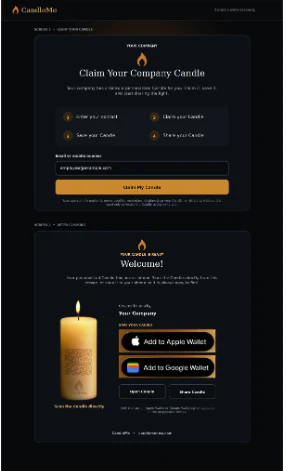

01 · Company Candle
Claim the company Candle.
Confirm the contact information on file, claim the branded Candle, then save it to Apple Wallet or Google Wallet.
- Confirm the match
- Save to Wallet
- Keep it ready to use and share

Employee Candle access and recovery
A company can claim its Candle, and a team member can find the Candle already assigned to them. Each page is branded for the client program.
Two paths, clearly separated
Each person sees only the route that applies to them. The result is the same: the correct Candle, ready to save and use again.
01 · Company Candle
Confirm the contact information on file, claim the branded Candle, then save it to Apple Wallet or Google Wallet.

02 · Employee Candle
A returning team member uses the mobile number or email address on file to retrieve the same Employee Candle. A manager does not need to rebuild it.

03 · Employee onboarding
The location’s onboarding QR is clearly marked for employees only. It already knows the correct business and location, so each person begins in the right place.
Show or post the QR. A manager can keep it on a phone or print it for an employee-only area.
The team member joins. Their unique Candle and personal dashboard open immediately.
The recovery path stays ready. If the link is lost or the phone changes, the same Candle can be found again.

Included from the pilot
Once a client program is live, including during a pilot, its branded claim, onboarding and recovery pages can be ready for the company and its team.